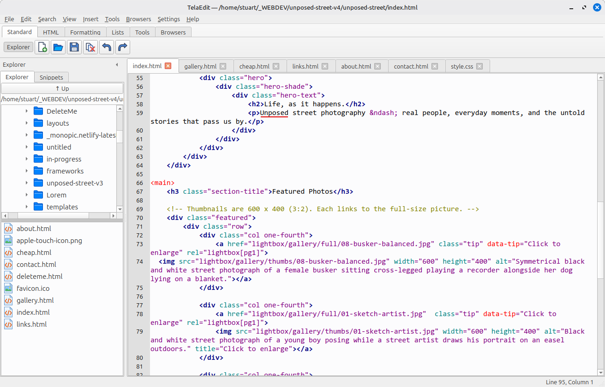

TelaEdit is a fast, no-nonsense editor with syntax colouring, tag helpers, an HTML checker, spell checking and one-click previews in all of your browsers.
Download for Linux View on GitHub
Free and open source (GPL v3). 64-bit Linux. Version 0.5.

The TelaEdit window: folders and files on the left, your page on the right.
Everything you need to write, check and preview a web page, with nothing in the way.
Syntax colouring for HTML, CSS and JavaScript, with the colour and weight of every element under your control. Matching tags and brackets are highlighted, and a bracket with no partner shows in red.
Type <div> and the closing tag is added for you. Insert paragraphs, headings, lists, links and images from the menu, and your own snippets from a panel.
Drag an image from the Explorer into your page and TelaEdit writes the tag with the right relative path and the real width and height.
Search forwards and back, and replace across every open document at once, with a summary of what changed in each.
Run HTML Tidy and click any message to jump to the line. Spell checking ignores your tags and scripts. Document Weight adds up a page and its images.
Open the page in up to ten browsers with one click, each with its own shortcut. Add your own tools, such as GIMP, to the toolbar.
Folders above, the files of the chosen folder below, with a divider you can drag. Right-click to open a folder in your file manager.
Open files, cursor positions, bookmarks and window layout all come back the next time you start it.
Change any keyboard shortcut, the editor font, the toolbar icon size and the colours. Back up all your settings to one ZIP file.
telaedit-linux-vX.Y.tar.gz from the Releases page../install.sh
TelaEdit then appears in your applications menu. You do not need to install Python or Qt.
To remove it again, run ./install.sh --uninstall.
You need Python 3. In a terminal:
python3 -m venv venv ./venv/bin/pip install PyQt6 PyQt6-QScintilla ./venv/bin/python3 telaedit.py
Two features use optional programs: tidy for HTML Tidy, and aspell or hunspell for spell checking.
TelaEdit is a hobby project, written for my own use and shared in case it is useful to others. It is free software, released under the GNU General Public License v3.
Built with Claude. I'm not a programmer. TelaEdit was developed in conversation with AI assistants, mainly Claude from Anthropic. I decided what the editor should do, tested every change on my own computers, and directed the design.
Bug reports and suggestions are welcome: please open an issue on GitHub and say what you were doing, what you expected and what happened.